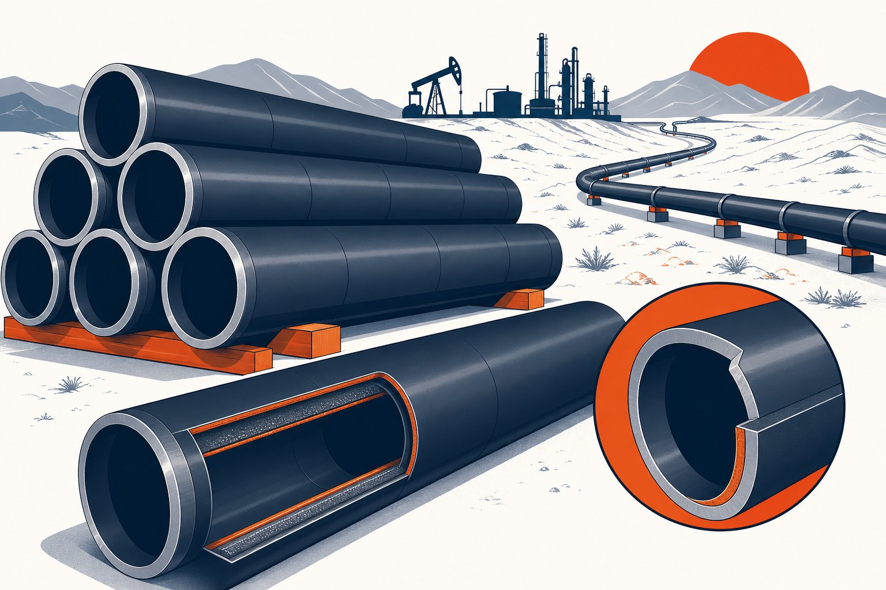

جایگاه استاندارد لوله خط انتقال
استاندارد لوله خط انتقال (API 5L) مشخصه لولههای فولادی مورد استفاده در خطوط انتقال نفت، گاز و آب را تعریف میکند و دو سطح مشخصه محصول دارد: سطح مشخصه محصول یک (PSL1) الزامات پایه و سطح مشخصه محصول دو (PSL2) الزامات تکمیلی با کنترلهای بیشتر. گریدها با حرف و عدد بیان میشوند که عدد، حداقل حد تسلیم را نشان میدهد.

سطوح مشخصه محصول (PSL1/PSL2)
| الزام | سطح مشخصه محصول ۱ (PSL1) | سطح مشخصه محصول ۲ (PSL2) |
|---|---|---|
| تست ضربه بدنه | الزامی نیست | الزامی با معیار پذیرش مشخص |
| کنترل ترکیب شیمیایی | پایه | سقفهای دقیقتر و معادل کربن |
| تستهای تکمیلی | اختیاری | الزامی یا قراردادی |
| کاربرد معمول | خطوط کمحساسیت | خطوط اصلی انتقال پرفشار |
برای خطوط اصلی انتقال معمولاً سطح مشخصه محصول ۲ (PSL2) به همراه الزامات تکمیلی سفارش داده میشود.
گریدها و روشهای ساخت
گریدهای رایج از ایکس۴۲ تا ایکس۸۰ را شامل میشوند؛ در پروژههای داخلی، ایکس۵۲ و ایکس۶۰ و ایکس۶۵ بیشترین کاربرد را دارند. روشهای ساخت شامل بدون درز، درزجوش مقاوم الکتریکی (ERW)، درزجوش فرکانس بالا (HFW)، درزجوش قوس زیرپودری طولی (SAWL) و مارپیچ (SAWH) است. انتخاب روش ساخت به سایز، فشار و الزامات بازرسی بستگی دارد.
- بدون درز: برای سایزهای کوچک تا متوسط و فشارهای بسیار بالا؛ یکنواختی محیطی کامل.
- درزجوش قوس زیرپودری طولی (SAWL): برای قطرهای بزرگ خطوط اصلی با کنترل کامل درز.
- درزجوش مارپیچ (SAWH): اقتصادی برای قطرهای بزرگ با محدودیتهای کاربردی مشخص.
- درزجوش مقاوم الکتریکی و فرکانس بالا (ERW/HFW): برای سایزهای کوچک تا متوسط خطوط فرعی.
سرویس ترش و الزامات تکمیلی
در خطوط حاوی سولفید هیدروژن، ریسک ترکخوردگی ناشی از سولفید و ترکخوردگی تنشزا در حضور هیدروژن مطرح است. پیوست سرویس ترش استاندارد لوله خط انتقال، محدودیتهای سختی، ترکیب شیمیایی و ریزساختار و تستهای ترکخوردگی را الزامی میکند. هماهنگی با استاندارد مقاومت در برابر ترک در خریدهای سرویس ترش ضروری است.
تستها و بازرسیهای اصلی
- تست هیدرواستاتیک هر شاخه مطابق فرمول استاندارد.
- تست غیرمخرب تماممحیطی درز جوش (در روشهای جوشی).
- تست ضربه برای سطح مشخصه محصول ۲ (PSL2) و سرویس دمای پایین.
- کنترل ابعاد، بیضوی، ضخامت و صافی انتهای لوله.
- بازرسی چشمی سطح و پوشش و درپوشها.
چکلیست استعلام خرید
- گرید و سطح مشخصه محصول را صریح ذکر کنید.
- روش ساخت مورد پذیرش پروژه را مشخص کنید.
- نوع انتهای لوله (پخدار، ساده یا رزوهدار) و طول شاخه را بنویسید.
- در صورت سرویس ترش، پیوست مربوطه و دمای تست ضربه را ذکر کنید.
- گواهی مواد، گزارش تستها و قابلیت ردیابی شماره ذوب را درخواست کنید.
جمعبندی
لوله خط انتقال ستون فقرات صنعت نفت و گاز است؛ انتخاب گرید و سطح مشخصه باید از الزامات طراحی خط پیروی کند، نه صرفاً قیمت هر تن. با استعلام کامل و بازرسی شخص ثالث، ریسک تحویل لوله نامنطبق به صفر میرسد.
سوالات رایج
معنی عدد گرید ایکس۵۲ چیست؟
عدد گرید بیانگر حداقل حد تسلیم مشخصه بر حسب هزار پوند بر اینچ مربع است؛ بنابراین گرید ایکس۵۲ حداقل حد تسلیم حدود ۳۵۸ مگاپاسکال دارد. هرچه گرید بالاتر باشد استحکام بیشتر و در فشار یکسان، دیواره نازکتر ممکن میشود.
تفاوت سطح مشخصه محصول ۱ (PSL1) و ۲ (PSL2) چیست؟
سطح مشخصه محصول ۲ (PSL2) الزامات سختگیرانهتری دارد: تست ضربه، سقف ترکیب شیمیایی دقیقتر، کنترلهای تکمیلی و آزمونهای بیشتر. برای خطوط انتقال حساس معمولاً سطح مشخصه محصول ۲ (PSL2) الزامی است.
برای سرویس ترش چه الزاماتی اضافه میشود؟
در سرویس حاوی سولفید هیدروژن، الزامات پیوست سرویس ترش بر سختی، ترکیب شیمیایی، ریزساختار و تستهای ترکخوردگی حاکم است و باید با استاندارد مقاومت در برابر ترک (NACE MR0175/ISO 15156) نیز هماهنگ شود.
لوله بدون درز بهتر است یا درزجوش؟
هر دو در صورت انطباق با استاندارد قابل قبولاند؛ بدون درز در سایزهای کوچک و فشارهای بسیار بالا رایجتر است و درزجوش در سایزهای بزرگ اقتصادیتر است. انتخاب نهایی را مشخصه فنی پروژه تعیین میکند.
مطالب مرتبط
- راهنمای جامع لوله مانیسمان
- راهنمای لولههای جوشی و بازرسی درز جوش
- استاندارد لوله کربنی دمای بالا
- راهنمای بازرسی درز جوش لولههای درزجوش
- استاندارد مقاومت در برابر ترک (NACE MR0175) در لوله و فلنج
برای استعلام لوله خط انتقال، گرید، سطح مشخصه محصول، روش ساخت، نوع انتهای لوله، شرایط سرویس (عادی یا ترش) و تستهای مورد نیاز را مشخص کنید تا پیشنهاد فنی-مالی دقیق ارائه شود.
مشاهده صفحه محصول ← ثبت RFQ همین محصولتامین این تجهیزات را به پیشرو تجهیز فرتاک بسپارید
شرکت پیشرو تجهیز فرتاک تامینکننده تخصصی تجهیزات صنعتی برای پروژههای نفت، گاز، پتروشیمی، فولاد و نیروگاهی است. برای دریافت پیشنهاد فنی و قیمت، استعلام (RFQ) خود را ثبت کنید تا کارشناسان مهندسی فروش در کوتاهترین زمان پاسخ دهند.
- تامین لوله انتقاللوله بدون درز و درزجوش با گواهی مواد و تست
- تامین تجهیزات صنایع نفت و گازپکیج مواد پایپینگ مطابق وندورلیست